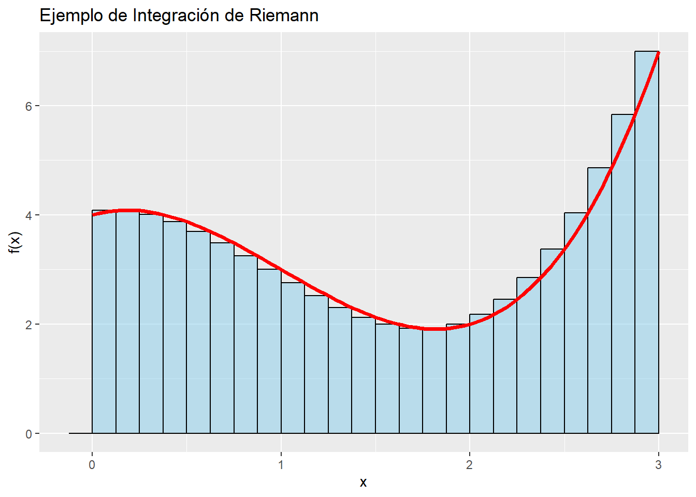
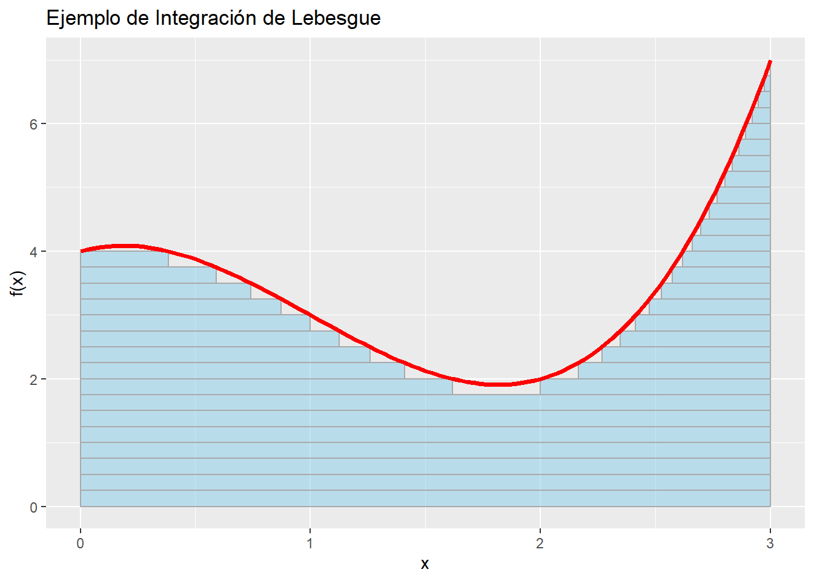

Después del cálculo de variaciones, necesitamos desviarnos hacia un tema relacionado, de algún modo, con la integración. De lo contrario, algunas partes de este ensayo serán más difíciles de entender.
Un pantallazo sobre teoría de la medida
Tal vez te hayas acostumbrado a llamar “integración” a algo como \(\int_{a}^{b}fdx\) , pero en realidad esa es solamente la integración de Riemann. Bueno, “solamente” motoriza el 99 % de todas las integraciones en la vida real, pero hay otras integrales especializadas que pueden manejar situaciones especiales como discontinuidades o huecos en \(f\), como la integral de Riemann-Stieltjes, la integral de Henstock-Kurzweil y la integral de Lebesgue. La última es en la que nos concentraremos más.
Vamos a empezar con un problema que aparentemente no tiene nada que ver: el tamaño de un conjunto. Digamos que tenemos un conjunto de números naturales \(\mathbb{N}\) y queremos saber qué tan grande es. Podemos, por ejemplo, simplemente contar cuántos elementos hay en el conjunto:
En cierto modo, \(\#\) es una función que recibe un conjunto como entrada una combinación de elementos de \(\mathbb{N}\) y produce un valor numérico. En la literatura, los elementos pertenecen a un conjunto \(\Omega\) y las combinaciones de esos elementos pertenecen a un conjunto de conjuntos \(\Sigma\) , también llamado sigma álgebra. Más formalmente, \(\# : \Sigma \to \mathbb{N}\).
\(\#\) es lo que se conoce como una medida. Para definir medidas se usa normalmente \(\mu\) y cumplen, grosso modo, dos condiciones:
\(\mu(s) \ge 0 ,\, \forall s \in \Sigma\), es decir, siempre son positivas. Esta condición, de todos modos, se puede relajar para obtener “medidas con signo”.
If \(A_1 \cap A_2 = \{\} \implies {\mu (A_1 \cup A_2) = \mu(A_1) + \mu(A_2)}\). Esto significa que el “tamaño” de un conjunto es el mismo que la suma de los tamaños de sus subconjuntos.
Hay muchas medidas, y cada una presenta diferentes propiedades. Las medidas se definen sobre un “conjunto medible”, es decir, sobre el par \((\Omega,\Sigma)\). Ya conocés la medida de conteo. La medida de Borel, que utilizaremos indistintamente con la medida de Lebesgue1, se puede definir como:
\[
\lambda((a,b])=b-a
\]
Si el conjunto es una composición de intervalos, se puede descomponer en tantas sumas como hagan falta, por lo que:
Hagamos ahora algo intrépido: ¿Viste que las integrales definidas trabajan sobre un intervalo (es decir, un conjunto) y el resultado de integrar es un número? Sí, una integral es una medida (con signo)2. Esto va a requerir replantearse qué significa realmente integrar, así como cambiar nuestra notación para la integral.
En el mundo que todos conocemos, integramos en el sentido de Riemann, \(\int_{a}^{b}fdx\). Esto significa:
\(I=\left[a,b\right]\) selecciona la porción a integrar del dominio de la función, \(\Omega\). Usando el lenguaje que establecimos anteriormente, \(I\subset \Omega,\, I\in \Sigma\)
Dividimos \(I\) en particiones, generalmente usando un tamaño de partición único \(\Delta x\), y obtenemos una lista de valores \(\left\{x_0=a, x_1, …, x_n=b\right\} \in I\)
Para cada partición \(x_i\), la evaluamos haciendo \(f(x_i)\) y obtenemos una lista de valores \(f_0, f_1, ..., f_n\)
Calculamos una aproximación de la integral haciendo que cada uno de estos valores sea un rectángulo de altura \(f_i\) y ancho predefinido \(\Delta x\), y sumando todos los rectángulos.
La integral, si existe, es el límite de esta suma cuando la norma de la partición tiende a cero.
Así es como se ve:
Código
library(ggplot2)library(broom)f <-function(x) x^3-3*x^2+ x +4# Define the interval [a, b] for integrationa <-0b <-3# Number of rectangles for approximationn <-24# Generate x values and corresponding function valuesx_values <-seq(a, b, length.out = n+1)y_values <-f(x_values)# Create a data frame for ggplotdf <-data.frame(x = x_values, y = y_values)# Calculate rectangle heightsdf$rect_heights <-c(0,f(x_values)[2:length(x_values)])# Calculate total width of the bars to fill the x-axistotal_width <- b - a# Create a ggplot with rectanglesp <-ggplot(df, aes(x = x, y = rect_heights)) +geom_col(width=(total_width/n), fill ="skyblue", color ="black", just =1, alpha=0.5) +geom_function(fun = f, color ="red", linewidth =1.25) +labs(title ="Ejemplo de Integración de Riemann",x ="x", y ="f(x)")# Print the plotprint(p)

A pesar de ser tan poderosa, existen limitaciones. Para empezar, solamente podemos integrar intervalos sobre un dominio real, \(\Omega =\mathbb{R}\) . Para funciones de muchas variables también necesitamos integrar sobre muchos dominios reales, por ejemplo \(\int_{x_a}^{x_b}\int_{y_a}^{y_b}\int_{z_a}^{z_b}f(x,y,z)\,dz\,dy\,dx\) .
Aquí podemos darnos cuenta de que podríamos deshacernos de estas restricciones si integrásemos sobre la única línea real que tiene existencia garantizada: la del codominio o imagen. Algo así como una pila de platos, para cada altura medimos el dominio que cae debajo de ella. Esto se llama integración de Lebesgue, se escribe como \(\int_{s} f\, d\lambda\) , y significa:
\(s\) selecciona una porción del dominio de la función, \(\Omega\) , para integrar. Con el lenguaje que hemos utilizado anteriormente, \(s\subset \Omega,\, s\in \Sigma\)
Dividimos la imagen de la función \(f^{-1}\) en particiones y obtenemos las imágenes \(f_0,f_1,…,\infty\)
Para cada una de estas particiones, obtenemos el conjunto de valores del dominio que tienen un valor de función al menos a esa altura: \(f^{-1}_t = \{\omega \in s\, / \, f(\omega) > t\}\in\Sigma\). Hay que tener en cuenta que estos conjuntos deben ser medibles (parte de la sigma álgebra) y que \(f_{\infty} = \{\}\), es decir que la integral esté acotada.
Calculamos una aproximación de la integral haciendo de cada uno de estos conjuntos un grupo de “volúmenes” de altura predefinida \(f_t\) y base \(\mu(f^{-1}_t)\), y sumando sobre todos los rectángulos.
Al sumar todos los conjuntos medidos, todas las porciones de alturas, obtenemos un valor final, es decir que verdaderamente la integral se comporta como una medida.
La integral, si existe, es el supremo de todas las sumas que se pueden obtener al dividir la imagen en particiones cada vez más pequeñas.
Así es como se ve este embrollo de acabamos de describir:
Código
A <-1B <--3C <-1D <-4f <-function(x) A*x^3+ B*x^2+ C*x + Ddfdx <-function(x) A*3*x^2+ B*2*x + C# Define the domain [left, right] for integrationleft <-0right <-3# Number of image partitionsmax_y <-7n <-28delta_y <- max_y / n# Generate x values and corresponding function valuesy_values <-seq(0, max_y, length.out = n +1)find_real_roots_of_cubic <-function(A, B, C, D, tolerance =1e-10) {# Find the roots using polyroot() roots <-polyroot(c(D, C, B, A))# Extract real parts of the roots real_parts <-Re(roots)# Filter out complex roots (where the imaginary part is close to zero) real_roots <- real_parts[abs(Im(roots)) < tolerance]return(real_roots)}calculate_intervals_for_measure <-function(A, B, C, D, lower_bound, upper_bound) {# Find the real roots roots <-find_real_roots_of_cubic(A, B, C, D) roots <-sort(roots)# The first interval should start on the lower bound if the function is decreasing intervals <-data.frame(a =double(), b =double()) current_left <- lower_bound# Then, build every pair of (f' > 0, f' < 0).for (i in (1:length(roots))) {# Stop if you have gone beyond the boundary.if (roots[i] > upper_bound) {break; }if (!is.na(current_left)) { possible_right <- roots[i]if (dfdx(possible_right) <0) {if (current_left < possible_right) {# Add an interval. intervals[nrow(intervals) +1,] <-c(current_left, possible_right) current_left <-NA } else {# This is closing an interval to the left of the lower bound. Skip. } } else {# Another increasing left would be the start of an interval to the left of the lower bound# or to the right of the lower bound. So, just keep the maximum.# It could also be a missed root in between, but we will disregard this option. current_left <-max(current_left, possible_right) } } else { possible_left <- roots[i]if (dfdx(possible_left) >0) {if (possible_left < upper_bound) {# The opening of a new interval. As long as it's not beyond the upper bound, use it. current_left <- possible_left } } else {# A decreasing function, without a left boundary, can be discarded } } }# If there's an open interval after processing, close it at the upper bound.if (!is.na(current_left)) { intervals[nrow(intervals) +1,] <-c(current_left, upper_bound) }return(intervals)}# Create a data frame for ggplotrectangles <-data.frame(xmin =double(),xmax =double(),ymin =double(),ymax =double())# Calculate all rectanglesfor(y in y_values) { intervals <-calculate_intervals_for_measure(A, B, C, D - y, left, right)for (i in (1:nrow(intervals))) { interval <- intervals[i,] rectangles[nrow(rectangles) +1,] <-c(interval[1], interval[2], max(0, y - delta_y), y) }}# Create a ggplot with rectanglesp <-ggplot() +geom_rect(data = rectangles,aes(xmin = xmin, xmax = xmax, ymin = ymin, ymax = ymax),fill ="skyblue",colour ="darkgrey",alpha =0.5) +geom_function(fun = f, color ="red", linewidth =1.25) +labs(title ="Ejemplo de Integración de Lebesgue",x ="x", y ="f(x)")# Print the plotprint(p)

Medidas gaussianas
Como último ejemplo de una medida, la medida gaussiana n-dimensional, con media 0 y desviación estándar 1, se define como:
Nuevamente, para cada valor posible de \(x \in A\), medimos todos los conjuntos de preimágenes que resulten de esos valores y sumamos todos los resultados de esas medidas. Esta función en particular es bastante buena porque cuando \(x\rightarrow\pm \infty\) la medida sigue siendo un número. También se llama medida de probabilidad porque \(\gamma^n(\Omega)=1\), es decir, el área bajo la curva para todo el dominio es 1 (o 100%). Si hiciste algo de probabilidad, la función \(\mathbb{P}\) fue siempre una medida de probabilidad, solo que nunca te lo dijeron.
Esto es mucho para digerir, ya sé. Leelo hasta que tenga sentido. ¡Después de todo, a mí me tomó 3 años de meditación en soledad sobre el tema!
La medida exterior de Lebesgue tiene una definición más compleja que evita algunos resultados patológicos que tiene la medida de Borel en ciertos conjuntos medibles. Para conjuntos “razonables”, donde la medida de Borel está bien definida, esta coincide con la medida de Lebesgue.↩︎
El recíproco, que cualquier medida (con signo) es siempre una integral, también es cierto bajo ciertas condiciones. Esta es la consecuencia del teorema de Radon-Nikodym.↩︎